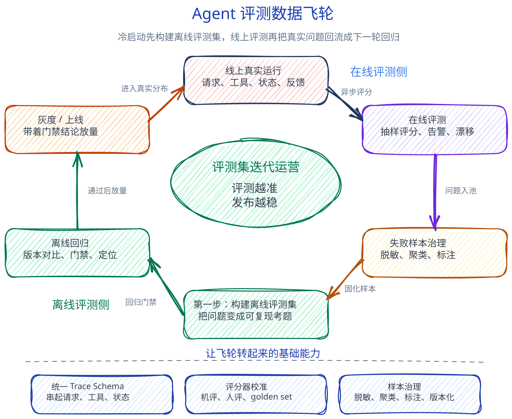

Agent 评测里的在线评测和离线评测
离线评测回答“这个版本在已知任务上能不能发布”，在线评测回答“真实用户正在经历什么，线上有没有出现新的退化和风险”。
讨论 Agent 评测时，“在线评测”和“离线评测”很容易被说成一组模糊词：一个像线上，一个像线下；一个像用户真实请求，一个像实验室样本。但真正影响评测设计的，不是名字，而是评测发生在哪里、用什么数据、在什么时机服务哪个决策。
我更愿意把它和另一组概念拆开看：端到端评测、过程评测回答“评什么”；在线评测、离线评测回答“在哪里评、用什么流量评、什么时候评”。这两组概念是正交的。一个离线评测可以做端到端，也可以检查工具轨迹；一个在线评测可以看任务闭环，也可以看生产 trace 里的异常路径。
先把定义拆清楚
离线评测，是在不依赖当前生产交互的条件下，用预先准备好的任务集、历史样本、合成样本或沙箱环境，批量运行 Agent 并打分。它通常发生在开发调试、CI、灰度前验收、版本回归和模型或 Prompt 变更之后。
它要解决的问题很直接：这个版本相对基线有没有变好，核心任务有没有退化，高风险样本还能不能过，是否可以进入下一步发布。为了回答这些问题，离线评测需要固定数据、固定环境、固定成功标准。这样分数才可复现，版本之间才可比较。
离线评测常见输入包括：
- 人工构造的任务集、需求样例、边界样例和高风险样例。
- 从历史线上 trace 中筛选、脱敏、标注后的回放样本。
- 合成任务、红队样本、复杂多轮任务和历史 bad case。
- 标准答案、最终状态断言、期望工具调用、rubric 和人工标注。
- 沙箱工具、mock 数据、固定初始状态、固定模型版本和固定 Prompt。
在线评测，则是在生产、灰度或真实用户交互环境里，对实际 run、thread、trace 和用户反馈做持续评估。它可以实时做一部分硬规则判断，但更常见的质量评测应该异步进行，避免复杂评分器拖慢用户链路。
它要解决的问题是另一个方向：真实用户是否正在遇到问题，线上分布有没有变化，工具、权限、时延、安全、成本有没有出现异常，是否有离线评测覆盖不到的失败模式。
在线评测常见输入包括：
- 生产请求、灰度流量、shadow traffic 或指定业务入口的真实样本。
- 完整 production trace，包括模型调用、工具调用、检索、路由、异常、重试和 guardrail。
- 用户反馈、人工质检、重试、改写、放弃、投诉、人工接管等行为信号。
- 线上业务结果，例如任务是否完成、状态是否改变、工单或报告是否成功生成。
所以一句话区分：离线评测看 controlled dataset，在线评测看 live traffic。前者强调可控、可复现、可比较；后者强调真实、及时、能发现未知问题。
业界大致怎么做
从公开资料看，Agent 和 LLM 应用评测正在从“只评模型回答”转向“评整个应用和工作流”。一些平台已经把数据集实验、生产 trace、在线评分、监控告警和样本回流放到同一套质量流程里。
LangSmith 将 LLM 应用评测组织成“离线回归”和“线上观测”两类互补流程：开发和发版前，团队用经过筛选、清洗和标注的评测数据集，对不同 prompt、模型、RAG 或 Agent workflow 版 本做可重复实验、版本对比和回归检查；上线后，则基于生产环境中的真实 runs / traces / threads 做质量监控、用户反馈分析和在线评分，并将低分、失败或有代表性的生产 trace 经筛选标注后沉淀为新的 dataset examples，反哺后续离线评测。
Braintrust 的 Experiment 更像一次可复现、可审计的离线评测快照。每次 prompt、模型、workflow 或 Agent 策略变更后，系统在同一批 dataset 上生成新的 Experiment，并与 baseline Experiment 按测试样本对齐，比较输出、评分、trace、成本、延迟和错误等差异。回归分析时，团队可以按 score delta 找到退步样本，用 diff mode 和 trace 下钻定位是最终回答变差、工具调用出错、RAG 证据变化还是成本延迟异常；也可以按任务类型、topic、模型、prompt 版本等 metadata 聚合，判断整体是提升、退步还是质量与成本之间的 tradeoff。Experiment 结果可通过链接、永久链接、PDF summary、CSV/JSON 导出、团队共享视图和 PR 评论共享，因此它既是评测记录，也是研发、产品和评审协作的质量证据。
OpenAI 的 Agent 工作流评测文档把 traces、graders、datasets、eval runs 放在一起，强调先用 trace 定位工作流问题，再把“好”的标准固化成可重复的数据集和评测运行。Microsoft Foundry 的公开文档则把 evaluation、monitoring、tracing 放在观测体系下，区分上线前评测和上线后生产监控。Phoenix 也支持在 production traces、experiment results 和 datasets 上运行评测。
国内公开产品里，模型评测能力更常见：自定义评测、基线评测、规则评分、模型裁判、人工评估、报告和排行榜都比较明确。这些能力对模型选型和调优验证很有用，但公开资料里对 Agent 真实工具环境、生产 trace 在线评分、失败样本回流的描述相对少一些。
两种评测的区别
下面这张表只做一件事：把离线评测和在线评测在多个维度上的差异放在一起。
| 维度 | 离线评测 | 在线评测 |
|---|---|---|
| 核心问题 | 在可控任务集上验证版本质量，判断是否可以发布、是否优于基线、是否引入回归。 | 在真实流量和生产 trace 上观察线上质量，发现退化、风险、漂移和未知失败模式。 |
| 发生时机 | 开发期、CI、灰度前、版本回归、模型或 Prompt 变更后。 | 灰度中、上线后、生产运行中、用户反馈发生后。 |
| 数据来源 | 人工任务集、历史 trace 回放、合成样本、标准答案、业务断言和红队样本。 | 真实请求、灰度流量、生产 trace、用户反馈、人工质检和线上业务结果。 |
| 运行环境 | 沙箱、mock 工具、测试知识库、固定权限、固定初始状态和固定版本。 | 真实工具、真实权限、真实数据、真实时延、真实失败和真实成本。 |
| 评测方式 | 人评、机评、人机结合都可以；关键是固定任务集、固定环境和固定成功标准，便于复现和版本对比。 | 人评、机评、人机结合也都可以；关键是基于真实流量做异步抽样、分层抽样或高风险规则检测。 |
| 主要产出 | 版本对比报告、上线准入结论、失败样本、回归样本、根因标签和修复建议。 | 质量看板、告警、异常聚类、线上失败样本池、风险趋势和待补充评测集。 |
| 优势 | 可复现、可比较、适合做门禁，也适合追踪一次变更到底影响了哪些任务。 | 真实、及时、能暴露离线样本没有覆盖的长尾问题，也能发现工具和数据环境的变化。 |
| 风险 | 样本会老化，覆盖不到真实长尾，也可能被反复调参“刷分”。 | 通常没有标准答案，噪声大，涉及隐私和成本控制，评分器误报后告警容易失效。 |
业务侧怎么评 Agent
站在业务视角，第一步不要急着选人评、机评、端到端还是过程评测。更靠前的问题是：这次评测要支持哪个业务决策。是一个新能力能不能上线，还是线上质量有没有退化；是一次模型变更能不能放量，还是一批用户负反馈该怎么归因。
然后把 Agent 任务写清楚。每条评测样本至少要包含用户输入、必要上下文、可用工具、权限边界、初始状态和成功标准。如果任务会改变业务状态，就不要只看 Agent 最后说了什么，而要看最终状态是否真的正确。
离线评测先守住已知问题
离线评测适合放在发版前和关键变更后。业务侧可以先维护几层评测集：
- 必过集：覆盖最核心、最不能失败的任务，用来做发布门槛。
- 黄金集：长期稳定维护，用来比较版本趋势，避免每次评测口径都变。
- 挑战集：覆盖多轮、多工具、复杂约束和边界条件，用来看能力上限。
- Bad case 集：来自历史线上问题，用来防止同类问题复发。
- 专项集：围绕某次模型、Prompt、工具或策略变更构建，用来命中影响面。
每次离线运行都应该记录 Agent 版本、模型版本、Prompt 版本、工具配置、环境配置、评测器配置和基线结果。只看一个汇总结果不够，报告里要能下钻到失败样本、执行轨迹、失败步骤和根因标签。
业务侧真正要看的不是“平均分高不高”，而是几个更硬的问题：核心任务是否全过，新版本是否相对基线退化，高风险样本是否被正确拒绝或转人工，修过的问题有没有复发，成本和时延有没有超过可接受范围。
在线评测再发现未知问题
在线评测适合放在灰度、生产监控和负反馈治理里。它的前提是 trace 要采全：模型调用、工具调用、检索证据、路由、参数、异常、重试、权限判断、最终状态和用户反馈都要能串起来。没有 trace，线上评测只能停留在抽样看回答。
在线评测要分清实时拦截和异步评估。越权、隐私泄露、危险操作、资金风险这类问题，应该由 guardrail、权限校验或审批机制在链路上实时拦截；复杂质量判断、模型裁判、人工质检和根因归类，更适合异步抽样完成。
一个可执行的在线评测配置，至少要写清楚：
- 评测哪些流量：全量、灰度、shadow、特定入口、特定能力或特定风险层。
- 怎么采样：全量规则检测，普通样本按比例抽样，高风险样本提高抽样率。
- 评什么指标：任务完成、工具失败、安全风险、用户反馈、成本、时延和异常轨迹。
- 怎么告警：阈值、连续失败、环比变化、高风险命中、工具错误突增。
- 怎么回流：失败 trace 脱敏、聚类、人工复核、标注，然后加入离线评测集。
把两类评测连起来
离线评测和在线评测不应该是两张互不相干的报表。比较稳的流程是：离线评测负责已知任务的准入和回归，在线评测负责发现真实环境里的未知问题；在线失败样本确认有效后，再进入离线评测集，成为下一次回归的一部分。
如果是一个新 Agent 冷启动，飞轮的第一步应该是构建离线评测集：先把需求样本、历史样本、人工构造样本和高风险样本组织成第一版可复现考题，再跑离线评测和基础门禁。上线之后，在线评测把真实失败、用户反馈和 trace 异常带回来，补强下一轮离线回归。

构建离线评测集 -> 离线评测 -> 灰度放量 -> 在线评测 -> 失败 trace 脱敏标注 -> 加入离线评测集 -> 修复后回归 -> 再放量
这样做的好处是，业务判断会更稳定。离线评测告诉你“这个版本能不能过已知考题”，在线评测告诉你“真实用户有没有遇到新问题”。前者不能替代后者，因为离线样本永远覆盖不完真实长尾；后者也不能替代前者，因为线上信号太嘈杂，难以单独支持版本门禁。
最后落到一个朴素判断：评测一个 Agent，不是为了把分数做漂亮，而是为了让每次发布、灰度、放量和修复都有证据。离线评测给出可复现的证据，在线评测给出真实环境的证据。两种证据放在一起，评测才真正进入业务迭代。